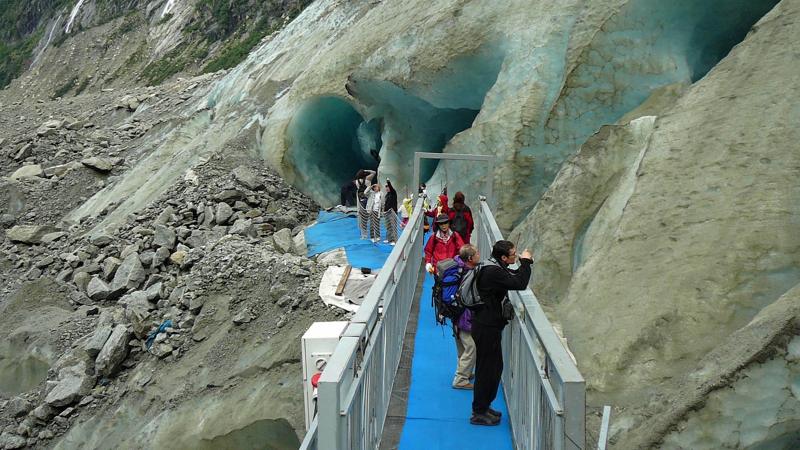

Montenvers - Mer de Glace
Train à crémaillere
Les trains à crémaillère circulent sur des pentes de plus de 9%, et sont au nombre de 5 en France. Cela fait du Train du Montenvers une expérience unique à ne pas manquer.
Les 5,1 kilomètres de trajet entre Chamonix-Mont-Blanc et le site du Montenvers se déroulent à flanc de montagne. Après 20 minutes de montée vous êtes arrivé au terminus à 1913 mètres d’altitude ! La vue sur les Drus, les Grandes Jorasses et les Grands Charmoz, est à couper le souffle.
Les 5,1 kilomètres de trajet entre Chamonix-Mont-Blanc et le site du Montenvers se déroulent à flanc de montagne. Après 20 minutes de montée vous êtes arrivé au terminus à 1913 mètres d’altitude ! La vue sur les Drus, les Grandes Jorasses et les Grands Charmoz, est à couper le souffle.

Train du Montenvers
Montenvers - Altitude 1913m
A votre descente du train, vous pourrez profitez du magnifique panorama sur la Mer de Glace et les Grandes Jorrasses
Une boutique et un restaurant sont à votre disposition sur place.
Le Glaciorium vous permettra d'en savoir un peu plus sur l'évolution des glaciers et de la Mer de Glace.
Une boutique et un restaurant sont à votre disposition sur place.
Le Glaciorium vous permettra d'en savoir un peu plus sur l'évolution des glaciers et de la Mer de Glace.
Train du Montenvers avec l'Aiguille Verte en arrière-plan

La Mer de Glace vue depuis le Montenvers
Grotte de Glace
Une télécabine, suivi d'un escalier de près de 500 marches vous permet d'acceder à l'entrée de la grotte. Le mouvement du glacier impose de creuser une nouvelle grotte 2 fois par an.
Une nouvelle télécabine est actuellement en construction pour faciliter l'accès à la Grotte. L'accès actuel étant réservé au plus sportifs.
En entrant dans la grotte, vous penetrez dans les entrailles du glacier. L'intérieur est vraiment magnifique!
Une nouvelle télécabine est actuellement en construction pour faciliter l'accès à la Grotte. L'accès actuel étant réservé au plus sportifs.
En entrant dans la grotte, vous penetrez dans les entrailles du glacier. L'intérieur est vraiment magnifique!
Les (nombreux!) escaliers vers la grotte de glace

Entrée de la grotte de glace
Espace cuisine dans la grotte de glace (brrr)
Salle à manger et cheminée dans la grotte de glace
Salle de bain dans la grotte de glace